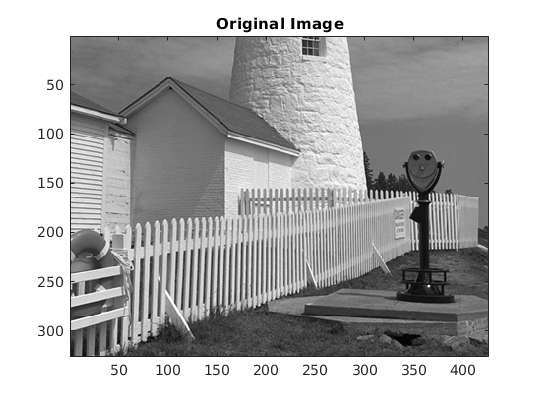
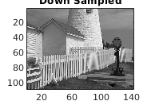
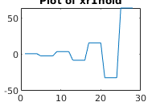
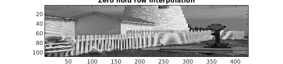
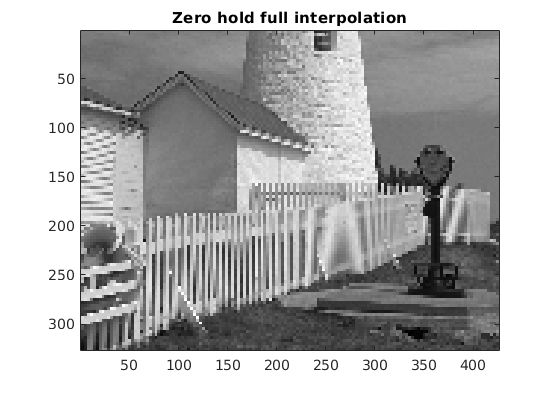
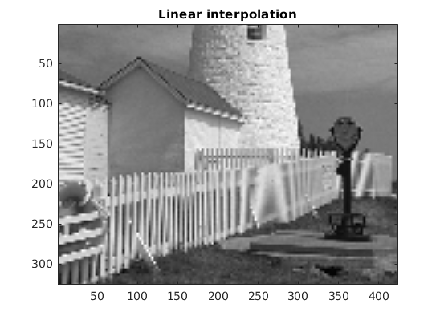

Contents
- Project Part 3.2 -- Completed with collaboration of Joshua Jacob Ekata Mitra, Ritaja Das, and Elias
- Part a: Plot the vector xr1hold to verify that it is a zero-order hold version derived from xr1. Explain what values are contained in the indexing vector nn. If xr1hold is treated as an interpolated version of xr1, then what is the interpolation factor?
- Part b: Display xholdrows as an image, and compare it to the downsampled image xx3; compare the size of the images as well as their content.
- Part C: Now process all the columns of xholdrows to fill in the missing points in each column and and call the result xhold. Compare the result (xhold) to the original image lighthouse
- Part D: For the example above, what is the interpolation factor when converting xr1 to xr1linear?
- Part E: In the case of the lighthouse image, you need to carry out a linear interpolation operation on both the rows and columns of the down-sampled image xx3. This requires two calls to the interp1 function, because one call will only process all the columns of a matrix. 10 Name the interpolated output image xxlinear. Include your code for this part in the lab report.
- Part F: Compare xxlinear to the original image lighthouse. Comment on the visual appearance of the "re-constructed” image versus the original; point out differences and similarities. Can the reconstruction (i.e., zooming) process remove the aliasing effects from the down-sampled lighthouse image?
- Part G: Compare the quality of the linear interpolation result to the zero-order hold result. Point out regions where they differ and try to justify this difference by estimating the local frequency content. In other words, look for regions of "low-frequency" content and “high-frequency” content and see how the interpolation quality is dependent on this factor.
clear; clc;
Project Part 3.2 -- Completed with collaboration of Joshua Jacob Ekata Mitra, Ritaja Das, and Elias
This first part sets up the scaled down image from 3.1.
clear; clc; load lighthouse; xx3 = xx; show_img(xx); title("Original Image") xpix = ones(256,1)*cos(2*pi*(0:255)/16); xx3 = xx3(1:3:size(xx3,1),1:3:size(xx3,2)); show_img(xx3) title("Down Sampled")
Image being scaled so that min value is 0 and max value is 255
Image being scaled so that min value is 0 and max value is 255
ans =
Axes with properties:
XLim: [0.5000 142.5000]
YLim: [0.5000 109.5000]
XScale: 'linear'
YScale: 'linear'
GridLineStyle: '-'
Position: [0.1316 0.1108 0.7717 0.8134]
Units: 'normalized'
Use GET to show all properties
  Part a: Plot the vector xr1hold to verify that it is a zero-order hold version derived from xr1. Explain what values are contained in the indexing vector nn. If xr1hold is treated as an interpolated version of xr1, then what is the interpolation factor?
The indexing vector nn contains the values at which the zero hold interpolated version should be evaluated at. These values are determined by the length of the original vector along with the interpolation factor. In this case the interpolation factor is 4. Xr1hold essentially stretches out xr1
xr1 = (-2).^(0:6);
L = length(xr1);
nn = ceil((0.999:1:4*L)/4);
xr1hold = xr1(nn);
plot(xr1hold);
title("Plot of xr1hold")
 Part b: Display xholdrows as an image, and compare it to the downsampled image xx3; compare the size of the images as well as their content.
The size here is 3 times the size of the down sampled image lengthwise. We see that the image size is now approximately the same as the orignal image lengthwise. We see some distortion and blurring along with the introduction of new artifacts
xholdrows = zeros(size(xx3,1),size(xx3,2)*3); indices = ceil((0.999:1:3*size(xx3,2))/3); for i = 1:size(xx3,1) temp = xx3(i,:); xholdrows(i,:) = temp(indices); end show_img(xholdrows); title("Zero hold row interpolation")
Image being scaled so that min value is 0 and max value is 255
Part C: Now process all the columns of xholdrows to fill in the missing points in each column and and call the result xhold. Compare the result (xhold) to the original image lighthouse
We now see the same sort of stretching as before except now the size nearly matches the original image in all directions. We see more distrotion and mismatched details.
xhold = zeros(size(xholdrows,1)*3,size(xholdrows,2)); indices = ceil((0.999:1:3*size(xholdrows,1))/3); for i = 1:size(xholdrows,2) temp = xholdrows(:,i); xhold(:,i) = temp(indices); end show_img(xhold) title("Zero hold full interpolation")
Image being scaled so that min value is 0 and max value is 255
ans =
Axes with properties:
XLim: [0.5000 426.5000]
YLim: [0.5000 327.5000]
XScale: 'linear'
YScale: 'linear'
GridLineStyle: '-'
Position: [0.1302 0.1108 0.7745 0.8134]
Units: 'normalized'
Use GET to show all properties
 Part D: For the example above, what is the interpolation factor when converting xr1 to xr1linear?
I have kept this code as a comment however the interpolation factor in this code is 10 n1 = 0:6; xr1 = (-2).ˆn1; tti = 0:0.1:6; -- locations between the n1 indices xr1linear = interp1(n1,xr1,tti);
%-- function is INTERP-ONE % stem(tti,xr1linear)
Part E: In the case of the lighthouse image, you need to carry out a linear interpolation operation on both the rows and columns of the down-sampled image xx3. This requires two calls to the interp1 function, because one call will only process all the columns of a matrix. 10 Name the interpolated output image xxlinear. Include your code for this part in the lab report.
THe code required is below
n1 = 1:size(xx3,1);
n2 = 1:size(xx3,2);
tti1 = 1:1/3:size(xx3,1);
tti2 = 1:1/3:size(xx3,2);
xxlinear1 = interp1(n1,xx3,tti1);
xxlinear = interp1(n2,xxlinear1',tti2);
xxlinear = xxlinear';
show_img(xxlinear);
title("Linear interpolation")
Image being scaled so that min value is 0 and max value is 255
Part F: Compare xxlinear to the original image lighthouse. Comment on the visual appearance of the "re-constructed” image versus the original; point out differences and similarities. Can the reconstruction (i.e., zooming) process remove the aliasing effects from the down-sampled lighthouse image?
The Re construction looks blurrier than the original image however it avoids some of the aliasing present in the zero hold interpolation. However, it can not avoid all aliasing.
Part G: Compare the quality of the linear interpolation result to the zero-order hold result. Point out regions where they differ and try to justify this difference by estimating the local frequency content. In other words, look for regions of "low-frequency" content and “high-frequency” content and see how the interpolation quality is dependent on this factor.
The linear interpolation looks better in my opinion than the zero hold result. Even though some new information is created and objects distroted, it looks more like just a simple blur rather than jagged and hard to figure out anomalies. Spots along the fence and roof make the differences most clear where we can see blurring and jagged edges, but in areas like the sky where not much changes all the images are approximately the same.